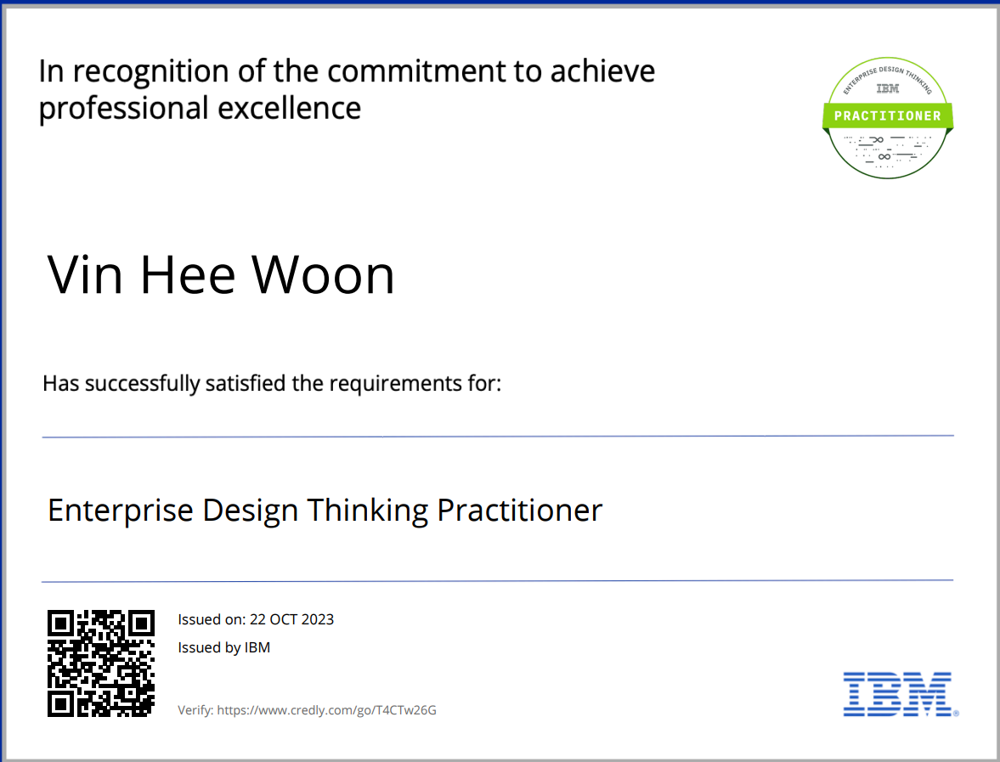
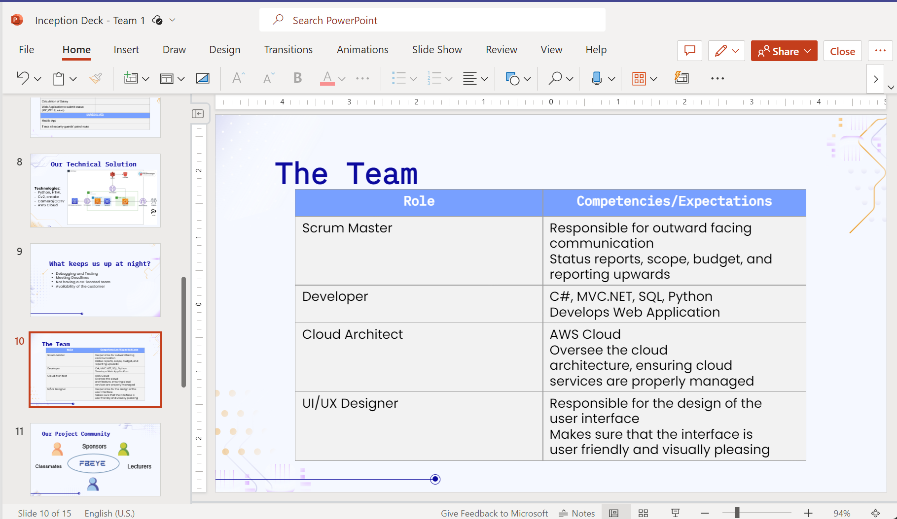
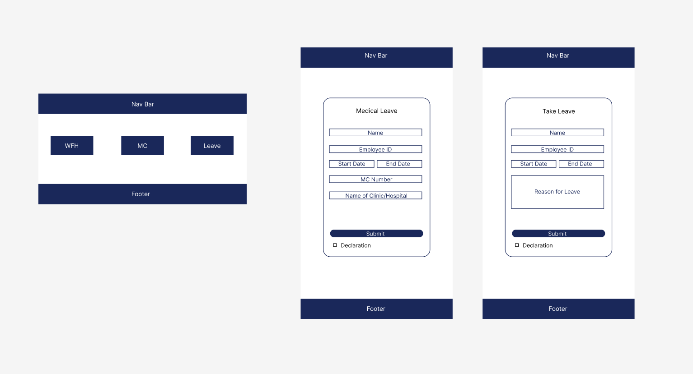
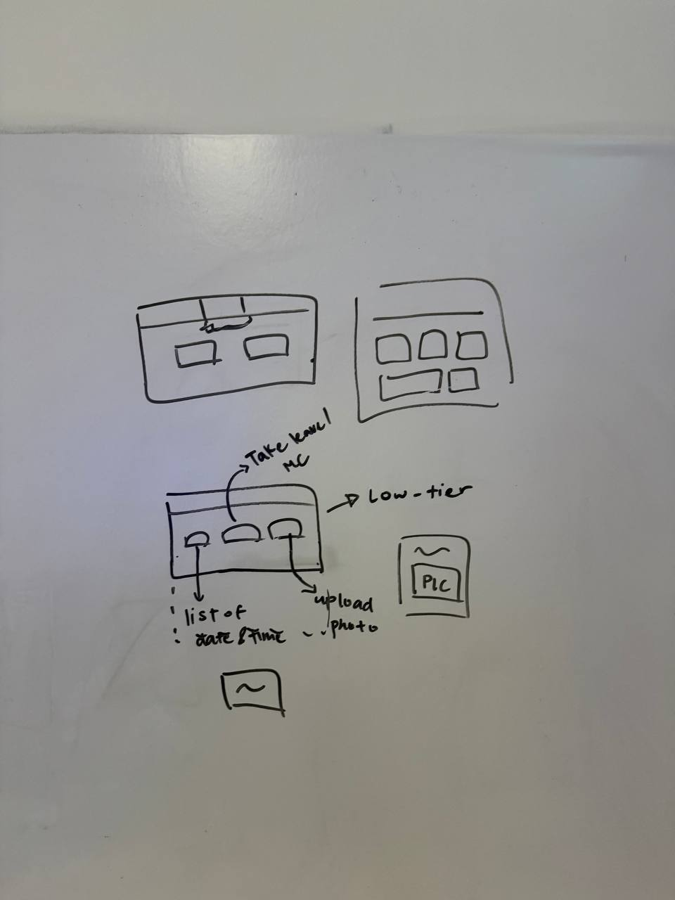

During class, we were given a challenge statement on Data Collection Applications. The challenge statement involved 3 different industries: Service, Manufacturing and Security.
My Contributions:
After understanding the challenge statement, my group thought and shared
some ideas. An idea I had was to identify the employees using a camera that has
been AI trained to recognise their faces. The AI would then record down the employees attendance
after going through the database of all employees' details.
One problem I discovered as we were discussing was what can we do about the attendance of those who are working from home? As we discussed, we've come to an agreement to create a website where employees working from home can take down their attedance.
Our finalize idea was to train the AI to identify the employees based on a database provided. In the database, the employees' face and details will be recorded down. If possible, one additional feature we would like to attempt is for the AI to be able to detect whether the person is an object or a human. By doing so, it prevents other employees from helping the other employees take fake attendance by using a photo of them.
For OAL, I did the course on becoming a Design Thinking practitioner. From this course, the main takeaway for me was before confirming the challenge statement, I should ask myself 5 whys. By doing so, I would have a challenge statement that takes in account of the user's perspective and reduce the chances of the ideas generated to be rejected by the stakeholders.
Some contents of the video like creating a prototype that tests whether the plan would fail or not would be ideal for my team to try out. This is because creating a cheap and fast prototype can easily save a lot of money, time and effort.
For week 2, my group and I are to prepare an inception deck that is to be presented to our sponsors : AIDC. In the inception deck, some questions that needed to be answered were : "Why are we here?", Product Box and Trade off Sliders etc.
One problem we had during the process of the creation of the inception deck was making the product box. In the product box, we are to show our product, product name, top 3 benefits and a slogan. We find making the slogan the hardest since it had to be catchy and related to our product, a camera that detects faces.
My Contributions:
For the slides, I contributed by finding a template for the slides and transferring all the work
done in the previous slides. After my teammates checked to see if the slides were alright,
I went on to add more things into the slides and remove the unnecessary details that may make the
slides too wordy.

For week 3, my team and I discussed more about the development of our solution to the challenge statement. We decided to create a web application for employees who are either working from home, on medical leave or taking a day off. This is so that employees who aren't in office are updated in the database to prevent the AI from sending emails.
My Contributions:
I contributed to the team by creating the website and taking in the ideas of how the
website should look like. Our team decided to make the website easy to understand by
having one main page that has multiple buttons leading to different services for the employees.
I designed a simple wireframe for my team members to understand how the website would probably look
like. The wireframe shown is not the final design of the website as there could be possible updates
in the future.

For week 4, our product FBEye is slowly coming together. Although we were at first worried about not having feedback from our sponsors about our solution. We decided to stick to our initial plan and continued developing our product as complete as possible. This is so that by hackathon, we can focus more on testing and improving our product.
My Contributions:
I contributed by discussing to my teammates more about our wireframe for our website as well as
confirming which language we will be coding our website in. At the end of the class, we have confirmed to
use java and html to create our website. I have also started on the website by setting it up to transfer
data to firebase as well as setting up some of the web pages for my teammates to get started on the front end.
Once my teammates are done with their part, I will start with the backend part, login verification.
The image below is our updated wireframe for our website, it may look a bit confusing but the actual website looks
better!
